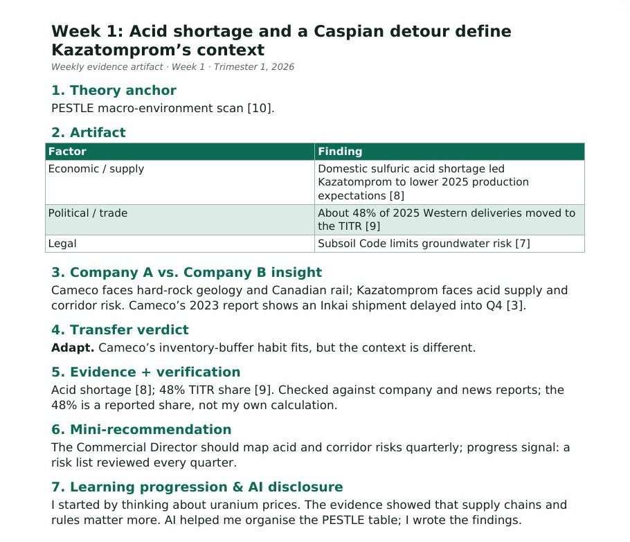

Week 1: Acid shortage and a Caspian detour define Kazatomprom’s context
1. Theory anchor
PESTLE macro-environment scan [10].
2. Artifact

| Factor | Finding |
|---|---|
| Economic / supply | Domestic sulfuric acid shortage led Kazatomprom to lower 2025 production expectations [8] |
| Political / trade | About 48% of 2025 Western deliveries moved to the TITR [9] |
| Legal | Subsoil Code limits groundwater risk [7] |
3. Company A vs. Company B insight
Cameco faces hard-rock geology and Canadian rail; Kazatomprom faces acid supply and corridor risk. Cameco’s 2023 report shows an Inkai shipment delayed into Q4 [3].
4. Transfer verdict
Adapt. Cameco’s inventory-buffer habit fits, but the context is different.
5. Evidence + verification
Acid shortage [8]; 48% TITR share [9]. Checked against company and news reports; the 48% is a reported share, not my own calculation.
6. Mini-recommendation
The Commercial Director should map acid and corridor risks quarterly; progress signal: a risk list reviewed every quarter.
7. Learning progression & AI disclosure
I started by thinking about uranium prices. The evidence showed that supply chains and rules matter more. AI helped me organise the PESTLE table; I wrote the findings.